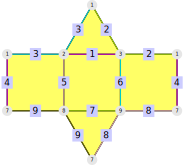
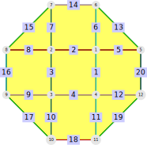
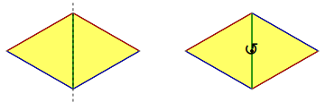
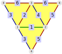
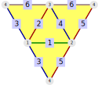
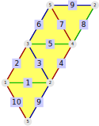

In Chapter 18, the concept of edge colourings was introduced in general. This chapter is concerned with a specific type of edge colourings, where every edge of a given face has to have a different colour (so it is varicoloured on each face).
In Section 19.1, the concept of the edge vari-colouring is defined. In addition, some access functions made possible by the colouring are described. Section 19.2 represents the edge vari-colouring of polygonal complexes without edge ramifications as permutations, the ColourInvolutions (19.2-1).
After these general properties, section 19.3 deals with a special subclass of a vari-colouring: edge exact-colourings, in which the number of colours is minimal (for example, in a simplicial surface there can only be three colours). It describes a method to uniquely reconstruct an exact-coloured surface from its permutation (by introducing the local symmetries (19.3-3)).
Section 19.3 also describes some methods to construct vari-coloured and exact-coloured surfaces.
This section defines the concept of edge vari-colourings (19.1-1) and introduces the coloured version of this method:
We will illustrate all of these on a prism with triangular base.
gap> prism := PolygonalSurfaceByDownwardIncidence( > [[2,3],[1,3],[1,2],[1,7],[2,8],[3,9],[8,9],[7,9],[7,8]], > [[1,3,2],,[3,5,9,4],[1,6,7,5],[2,4,8,6],,[7,8,9]]);; gap> colPrism := EdgeColouredPolygonalComplex(prism, [1,4,2,1,5,2,4,5,3]);;
This can be drawn by DrawSurfaceToTikz (18.2-1).
gap> pr := rec( edgeDrawOrder := [1,5,6,7], > edgeColourClassColours := ["magenta", "cyan", "olive", "lime", "pink"] );; gap> DrawSurfaceToTikz(colPrism, "Prism_coloured", pr );;

‣ IsEdgeVariColouring( colComplex ) | ( property ) |
‣ IsEdgeExactColouring( colComplex ) | ( property ) |
Returns: true or false
The property IsEdgeVariColouring checks if the edges of each face are vari-coloured by the given edge colouring. This is the case if and only if all edges of each face have different colours.
For each face there have to be at least as many colours as there are incident edges. Therefore the maximal number of edges in a face is a lower bound on the number of colours in such a colouring. If this lower bound is obtained, we call the colouring exact, which is checked by the property IsEdgeExactColouring. For a simplicial surface this means that there are exactly three colours.
We illustrate this on the prism that was introduced at the start of Section 19.1.
The given edge colouring is a vari-colouring but not an exact-colouring.
gap> EdgesOfColours( colPrism ); [ [ 1, 4 ], [ 3, 6 ], [ 9 ], [ 2, 7 ], [ 5, 8 ] ] gap> IsEdgeVariColouring( colPrism ); true gap> IsEdgeExactColouring( colPrism ); false
Since there are faces with four incident edges, any colouring with less than four colours can't be a vari-colouring. Conversely, a colouring with more than four colours can't be exact.
In fact, there is no exact vari-colouring for this polygonal surface. TODO refer to comparison with simplicial surface (prove this result there);
‣ ColouredEdgesOfFaces( rbComp ) | ( attribute ) |
‣ ColouredEdgesOfFace( rbComp, face ) | ( operation ) |
‣ ColouredEdgesOfFaceNC( rbComp, face ) | ( operation ) |
Returns: a list of (lists of) positive integers
For an edge vari-coloured polygonal complex the method ColouredEdgesOfFace(rbComp, face) returns a list of the incident edges of face such that the i-th entry has the colour i. The NC-version does not check whether the given face is an actual face of the coloured complex.
The attribute ColouredEdgesOfFaces collects all of these lists in a list indexed by the face labels, i.e. ColouredEdgesOfFaces(rbComp)[face] = ColouredEdgesOfFace(rbComp, face). All other positions are unbound.
Consider the prism example from the start of Section 19.1.
gap> ColoursOfEdges(colPrism); [ 1, 4, 2, 1, 5, 2, 4, 5, 3 ] gap> ColouredEdgesOfFace(colPrism, 1); [ 1, 3,, 2 ] gap> ColouredEdgesOfFace(colPrism, 4); [ 1, 6,, 7, 5 ] gap> ColouredEdgesOfFaces(colPrism); [ [ 1, 3,, 2 ],, [ 4, 3, 9,, 5 ], [ 1, 6,, 7, 5 ], [ 4, 6,, 2, 8 ],, [ ,, 9, 7, 8 ] ]
While Section 19.1 dealt with general edge vari-colourings, this section is restricted to edge vari-colourings of polygonal complexes without edge ramifications. For those there are at most two faces incident to an edge.
Therefore every colour can be interpreted as an involution on the set of faces (which swaps two faces that are connected by an edge of that colour).
For example, consider a coloured disk (that has a boundary).
gap> disk := PolygonalSurfaceByDownwardIncidence( > [[1,4],[1,2],[2,3],[3,4],[1,5],[1,6],[2,7],[2,8],[3,9],[3,10], > [4,11],[4,12],[5,6],[6,7],[7,8],[8,9],[9,10],[10,11],[11,12],[5,12]], > [[13,6,5],[14,7,2,6],[15,8,7],[5,1,12,20],[2,3,4,1], > [8,16,9,3],[12,11,19],[4,10,18,11],[9,17,10]] );; gap> IsClosedComplex(disk); false gap> colDisk := EdgeColouredPolygonalComplex(disk, > [[13,15,17,19],,[5,2,8,18],[14,12,4,9],[20,7,3,10],[6,1,11,16]] );; gap> IsEdgeVariColouring(colDisk); true

The colour 3 (red in the picture) corresponds to the involution \((1,4)(2,5)(3,6)\), while the colour 1 (green in the picture) induces the trivial permutation since all of its edges are boundary edges. The permutations can be accessed by the ColourInvolutions-methods (19.2-1):
gap> ColourInvolutions(colDisk); [ (),, (1,4)(2,5)(3,6), (4,7)(5,8)(6,9), (2,3)(5,6)(8,9), (1,2)(4,5)(7,8) ]
‣ ColourInvolutions( rcRamSurf ) | ( attribute ) |
Returns: a list of involutions
For an edge vari-coloured (19.1-1) polygonal complex without edge ramifications (2.3-1), return the colour involutions.
The attribute ColourInvolutions(rcRamSurf) returns a list of involutions (the position col is bound if and only if col is a colour of the underlying polygonal complex without edge ramifications).
For a given colour col the colour involution encodes the neighbouring relation of the faces that is induced by the edges of the colour col. A boundary edge induces a fixed point.
This can be seen on the example from the start of section 19.2.
gap> ColourInvolutions(colDisk); [ (),, (1,4)(2,5)(3,6), (4,7)(5,8)(6,9), (2,3)(5,6)(8,9), (1,2)(4,5)(7,8) ]
While the previous sections dealt with general edge vari-colourings, this section focuses exclusively on edge exact-coloured simplicial surfaces, i.e. simplicial surfaces whose edges are coloured with three colours such that the edges of each face have different colours. Since these are quite important structures, we will denote them by wild-coloured surfaces (19.3-1).
In this situation there is an additional local symmetry structure on the edges. For every inner edge (9.4-1) there are two possible colourings of the adjacent faces, which can be described by a symmetry with respect to the edge between them. The colours can either be mirrored or rotated into each other.

The first type is called mirror and the second one rotation. Together with the boundary-type for the boundary edges (9.4-3) this defines the LocalSymmetryOfEdges (19.3-3).
Together with the edge colouring, the local symmetry determines the underlying simplicial surface.
‣ IsWildColouredSurface( colSurf ) | ( property ) |
Returns: true or false
Check if an edge-coloured polygonal complex is a wild-coloured surface, i.e.
It is a simplicial surface (2.3-5)
It has an edge-exact colouring (19.1-1), i.e. the edges are coloured by three colours and the edges of every face have different colours.
For example, consider the tetrahedron. This colouring is a wild colouring of the tetrahedron:
gap> wildColTetra:=EdgeColouredSimplicialSurface(Tetrahedron(),[1,2,3,3,2,1]);; gap> IsWildColouredSurface(wildColTetra); true
This colouring of the tetrahedron is an example for a coloring that is not a wild colouring:
gap> colTetra:=EdgeColouredSimplicialSurface(Tetrahedron(),[1,2,3,3,2,2]);; gap> IsWildColouredSurface(colTetra); false

Using four colours leads to a colouring that is not a wild colouring:
gap> colFourTetra:=EdgeColouredSimplicialSurface(Tetrahedron(),[1,2,3,3,2,4]);; gap> IsWildColouredSurface(colFourTetra); false

‣ ColouredUmbrellasOfVertices( wildSurf ) | ( attribute ) |
‣ ColouredUmbrellaOfVertex( wildSurf, vertex ) | ( operation ) |
‣ ColouredUmbrellaOfVertexNC( wildSurf, vertex ) | ( operation ) |
Returns: a list of coloured edge-face-paths
For a wild coloured surface (19.3-1) the method ColouredUmbrellaOfVertex(wildSurf, vertex) returns an edge-coloured edge-face path for the umbrella-path around vertex. All of these umbrella-paths are collected in the attribute ColouredUmbrellasOfVertices(wildSurf), i.e. ColouredUmbrellasOfVertices(wildSurf)[vertex] = ColouredUmbrellaOfVertex(wildSurf, vertex).
This method extends UmbrellaPathsOfVertices (3.4-1). The edge-coloured edge-face-paths behave exactly as regular edge-face-paths but are displayed differently.
The NC-version does not check whether the given vertex actually is a vertex of wildSurf.
‣ LocalSymmetryOfEdges( colSurf ) | ( attribute ) |
‣ LocalSymmetryOfEdgesAsNumbers( colSurf ) | ( attribute ) |
Returns: a list of strings
Return the local symmetry of the edges in colSurf, i.e. whether the colours in the adjacent faces of a given inner edge are mirrored or rotated.
The edges of the edge coloured surface colSurf have a local symmetry. For every inner coloured edge (9.4-1) there are two possible colourings of the adjacent faces, which can be described by a symmetry with respect to the edge between them. The colours can either be mirrored or rotated into each other.
The first type is called mirror and the second one rotation. Together with the boundary-type for the boundary edges (9.4-3) this defines the LocalSymmetryOfEdges.
This function returns a list whose ith entry is "mirror" if the ith edge of colSurf is a mirror edge, or "rotation" if the ith edge of colSurf is a rotation edge, or "boundary" if the ith edge of colSurf is a boundary edge.
gap> oct := Octahedron();; gap> oct := AllWildColouredSurfaces(oct);; gap> LocalSymmetryOfEdges(oct[1]); [ "mirror", "mirror", "mirror", "mirror", "mirror", "mirror", "mirror", "mirror", "mirror", "mirror", "mirror", "mirror" ] gap> LocalSymmetryOfEdges(oct[2]); [ "mirror", "rotation", "mirror", "rotation", "mirror", "mirror", "mirror", "mirror", "rotation", "mirror", "mirror", "rotation" ]
Of particular interest are those colourings where the local symmetry is equal for each edge of the same colour. In comparison to the wild-coloured surfaces these colourings are much better behaved. Therefore they are called tame-coloured surfaces.
‣ IsTameColouredSurface( colSurf ) | ( property ) |
‣ LocalSymmetryOfColours( colSurf ) | ( attribute ) |
‣ LocalSymmetryOfColoursAsNumbers( colSurf ) | ( attribute ) |
Returns: true or false
Check whether the local symmetry (19.3-3) of a wild-coloured surface is equal for all edges of the same colour.
The method LocalSymmetryOfColours returns a list of local symmetries that is indexed by the colours.
For example, consider the octahedron:
gap> oct := AllWildColouredSurfaces(Octahedron());; gap> IsTameColouredSurface(oct[1]); true gap> LocalSymmetryOfColours(oct[1]); [ "mirror", "mirror", "mirror" ] gap> LocalSymmetryOfEdgesAsNumbers(oct[1]); [ 1, 1, 1, 1, 1, 1, 1, 1, 1, 1, 1, 1 ] gap> IsTameColouredSurface(oct[1]); true gap> LocalSymmetryOfColours(oct[2]); [ "mirror", "rotation", "mirror" ] gap> LocalSymmetryOfEdgesAsNumbers(oct[2]); [ 1, 2, 1, 2, 1, 1, 1, 1, 2, 1, 1, 2 ]
Consider the following edge coloured surface:
gap> surface:=SimplicialSurfaceByDownwardIncidence( > [[1,2],[1,3],[2,3],[2,4],[3,4],[3,5],[4,5],[2,4],[2,5],[1,5]], > [[1,2,3],[3,4,5],[5,6,7],[7,8,9],[9,10,1]]);; gap> colSurface:=EdgeColouredSimplicialSurface(surface,[1,2,3,2,1,3,2,1,3,2]);; gap> IsTameColouredSurface(colSurface); false

This is an example for a surface which is not tame coloured, since the blue edges do not have the same symmetry.
‣ AllWildColouredSurfaces( simpSurf[, localSymmetry, noIsom] ) | ( operation ) |
‣ AllTameColouredSurfaces( simpSurf[, localSymmetry, noIsom] ) | ( operation ) |
‣ AllWildColouredSurfaces( invList[, localSymmetry, noIsom] ) | ( operation ) |
‣ AllTameColouredSurfaces( invList[, localSymmetry, noIsom] ) | ( operation ) |
Returns: a list of wild-coloured surfaces
This method computes all wild-coloured surfaces up to isomorphism based on the given information. If the optional parameter noIsom is set to false, the method computes all wild-coloured surfaces. This means the returned list contains isomorphic edge-coloured surfaces. By default, noIsom is true. The information can be given in one of two forms:
A simplicial surface (2.3-5). The optional argument localSymmetry is a list that encodes the local symmetry (19.3-3) of some edges:
If localSymmetry[edge] = 1, then edge will become a mirror-edge.
If localSymmetry[edge] = 2, then edge will become a rotation-edge.
Unbound positions and the value 0 are ignored, all other entries will throw errors.
A list of three involutions that will become the colour involutions (19.2-1) of all returned wild-coloured surfaces. The involutions can also be given individually (with colours 1, 2, 3) or as generators of a group.
The optional argument localSymmetry is a list that encodes the local symmetry (19.3-4) of the colours. The entry localSymmetry[colour] can be given in one of two forms (all others will throw errors):
If the entry localSymmetry[colour] is 1, then all edges with colour colour will be mirror edges. If it is 2, they will be rotation edges. If the entry is 0 or unbound, no information is given.
If the entry localSymmetry[colour] is again a list, it has to be indexed by the cycles of the involution invList[colour], i.e. the entry at position k encodes the local symmetry of the k-th cycle (counted in Cycles(invList[colour], [1..n]), where n is the highest point moved by the involutions). As usual, 1 means mirror and 2 means rotation.
The method AllTameColouredSurfaces works identical, except that it only returns the tame-coloured surfaces (19.3-4).
gap> tetWild := AllWildColouredSurfaces(Tetrahedron());; gap> Size(tetWild); 1 gap> tetTame := AllTameColouredSurfaces(Tetrahedron());; gap> Size(tetTame); 1 gap> octTame := AllTameColouredSurfaces(Octahedron());; gap> Size(octTame); 2 gap> octTameIsom := AllTameColouredSurfaces(Octahedron(),false);; gap> Size(octTameIsom); 4
TODO examples that use local symmetries -> what is interesting (but small)?
‣ SixFoldCover( simpSurf, localSymmetry ) | ( operation ) |
Returns: a tame coloured surface
Construct the six fold cover of a simplicial surface. The argument localSymmetry is a list with three entries, all of them being 1 (mirror) or 2 (rotation).
The six fold cover of a simplicial surface is a tame coloured simplicial surface that covers the original surface six times.
It is constructed in the following way:
For each face \(f\) of simpSurf (with edges \(e_a\), \(e_b\) and \(e_c\)) there are six faces in the cover. These have the form \((f, e_1, e_2, e_3)\) with \(\{e_1,e_2,e_3\} = \{e_a,e_b,e_c\}\). Formally they represent the map \(e_a \to e_1\), \(e_b \to e_2\), \(e_c \to e_3\).
For each face of the six fold cover and each \(i\in\{1,2,3\}\) an edge of this face is defined. For example, if \(i = 2\) and the face is \((f,e_x,e_y,e_z)\), we construct the neighbour in the following way:
Find the neighbour of \(f\) with respect to \(e_y\), denoted by \(g\). The neighbour in the six fold cover will be of the form \((g,?,e_y,?)\). The content of the \(?\) depends on the argument localSymmetry. Assume \(g\) has the edges \(\{e_y,e_v,e_w\}\), where \(e_x,e_y,e_v\) share a vertex in simpSurf. If localSymmetry[i] = 1, we perform a mirroring, so the neighbour will be \((g,e_v,e_y,e_w)\). If localSymmetry[i]=2, we perform a rotation, so the neighbour will be \((g,e_w,e_y,e_v)\).
To define the vertices, localSymmetry is used. All edges with \(i=2\) in the preceding explanation will get the local symmetry localSymmetry[2] (mirror if it is 1, rotation if it is 2).
gap> tetra := Tetrahedron();; gap> SixFoldCover(tetra); [ tame coloured surface (MMM with 12 vertices, 36 edges and 24 faces), rec( Description := "[oldFace, [vertices of the oldFace]]", Faces := [ [ 1, [ 1, 2, 4 ] ], [ 1, [ 1, 4, 2 ] ], [ 1, [ 2, 1, 4 ] ], [ 1, [ 2, 4, 1 ] ], [ 1, [ 4, 1, 2 ] ], [ 1, [ 4, 2, 1 ] ], [ 2, [ 1, 3, 5 ] ], [ 2, [ 1, 5, 3 ] ], [ 2, [ 3, 1, 5 ] ], [ 2, [ 3, 5, 1 ] ], [ 2, [ 5, 1, 3 ] ], [ 2, [ 5, 3, 1 ] ], [ 3, [ 4, 5, 6 ] ], [ 3, [ 4, 6, 5 ] ], [ 3, [ 5, 4, 6 ] ], [ 3, [ 5, 6, 4 ] ], [ 3, [ 6, 4, 5 ] ], [ 3, [ 6, 5, 4 ] ], [ 4, [ 2, 3, 6 ] ], [ 4, [ 2, 6, 3 ] ], [ 4, [ 3, 2, 6 ] ], [ 4, [ 3, 6, 2 ] ], [ 4, [ 6, 2, 3 ] ],[ 4, [ 6, 3, 2 ] ] ] ) ] gap> NumberOfConnectedComponents(last[1]); 1 gap> SixFoldCover(Tetrahedron(), [2,2,2] ); [ tame coloured surface (RRR with 24 vertices, 36 edges and 24 faces), rec( Description := "[oldFace, [vertices of the oldFace]]", Faces := [ [ 1, [ 1, 2, 4 ] ], [ 1, [ 1, 4, 2 ] ], [ 1, [ 2, 1, 4 ] ], [ 1, [ 2, 4, 1 ] ], [ 1, [ 4, 1, 2 ] ], [ 1, [ 4, 2, 1 ] ], [ 2, [ 1, 3, 5 ] ], [ 2, [ 1, 5, 3 ] ], [ 2, [ 3, 1, 5 ] ], [ 2, [ 3, 5, 1 ] ], [ 2, [ 5, 1, 3 ] ], [ 2, [ 5, 3, 1 ] ], [ 3, [ 4, 5, 6 ] ], [ 3, [ 4, 6, 5 ] ], [ 3, [ 5, 4, 6 ] ], [ 3, [ 5, 6, 4 ] ], [ 3, [ 6, 4, 5 ] ], [ 3, [ 6, 5, 4 ] ], [ 4, [ 2, 3, 6 ] ], [ 4, [ 2, 6, 3 ] ], [ 4, [ 3, 2, 6 ] ], [ 4, [ 3, 6, 2 ] ], [ 4, [ 6, 2, 3 ] ], [ 4, [ 6, 3, 2 ] ] ] ) ] gap> NumberOfConnectedComponents(last[1]); 6
‣ CommonCover( surf1, surf2, localSym1, localSym2 ) | ( operation ) |
Returns: a pair of a simplicial surface and a record that stores vertices, edges and faces of it
Compute the common cover of two simplicial surfaces.
TODO
generated by GAPDoc2HTML